Annual BTC accretion rate
+4.37% / yr
vs auto-buy (historical window)
Bitcoin Treasury Program
AZRO is a rules-based treasury system designed for small businesses. It executes disciplined accumulation while maintaining a stable operating cash buffer.
Educational materials only. Not financial, tax, or legal advice.
Annual BTC accretion rate
+4.37% / yr
vs auto-buy (historical window)
BTC from the same dollars
+1.48× BTC
using disciplined execution
Designed for weekly budgets
Start conservatively—many businesses begin with a small weekly budget and a defined cash buffer, then scale only if the operating model remains robust.
Past performance is not indicative of future results. Bitcoin is volatile.
Many small businesses are experiencing a widening gap between nominal growth and real purchasing power. When essential costs rise faster than revenue and wages, “flat” performance can quietly become decline.
For many operators, the lived cost of housing, healthcare, childcare, and inputs can outpace headline inflation. This compresses margins and reduces the ability to save in real terms.
Even with nominal increases, many households and businesses see limited real improvement. The result is more effort for the same outcome.
The strongest long-term posture is to build an engine that compounds— while keeping core operations liquid and resilient through cycles.
Below is an example historical window from the performance addendum. It compares rule-based execution against a simple auto-buy schedule.
Example inputs shown in the addendum: $50/week contributions, $1,000 starting cash buffer, fees included; window: 2017-01-01 to 2026-02-09.
| Mode | BTC-eq | vs auto-buy | Extra sats |
|---|---|---|---|
| Auto-buy | 3.757 | 1.00× | — |
| Accumulate-only | 4.264 | 1.14× | +50.8M |
| Valve Smooth | 5.544 | 1.48× | +178.8M |
Illustration from the performance addendum. Click to expand.
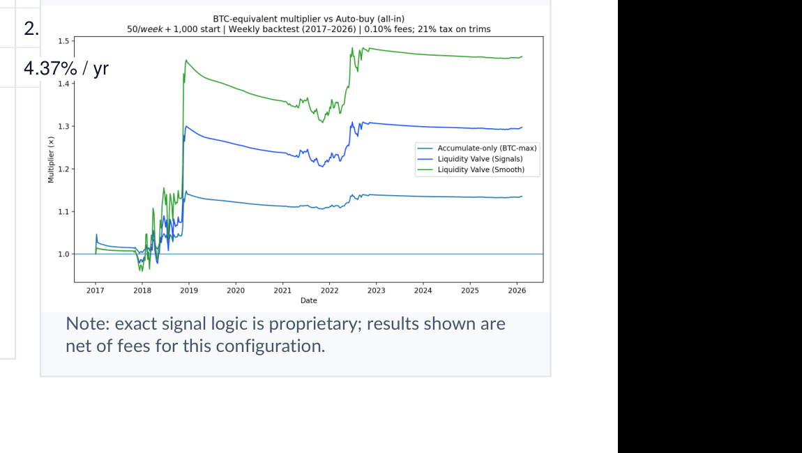
A visual comparison of the strategy paths.
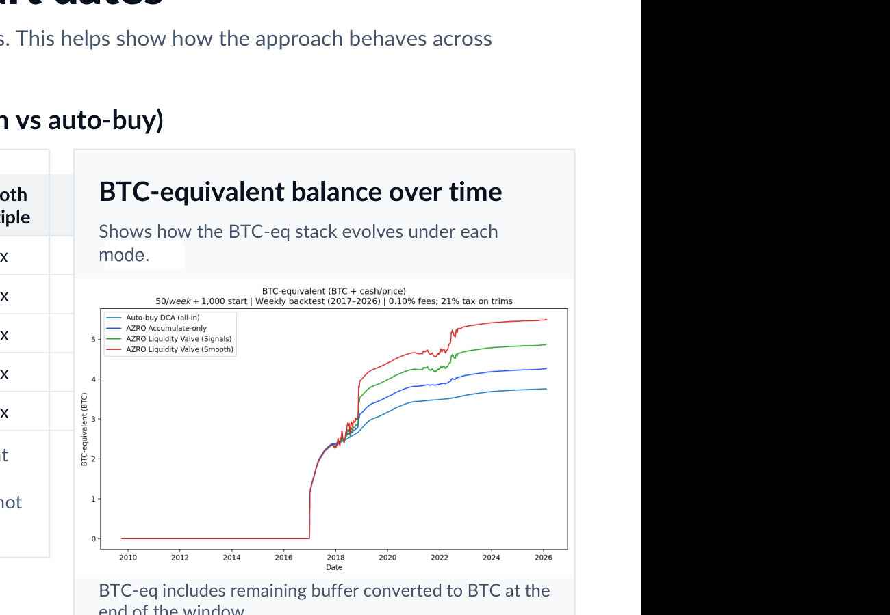
What this does and does not mean:
Illustrative outcomes from the addendum. Click to expand.
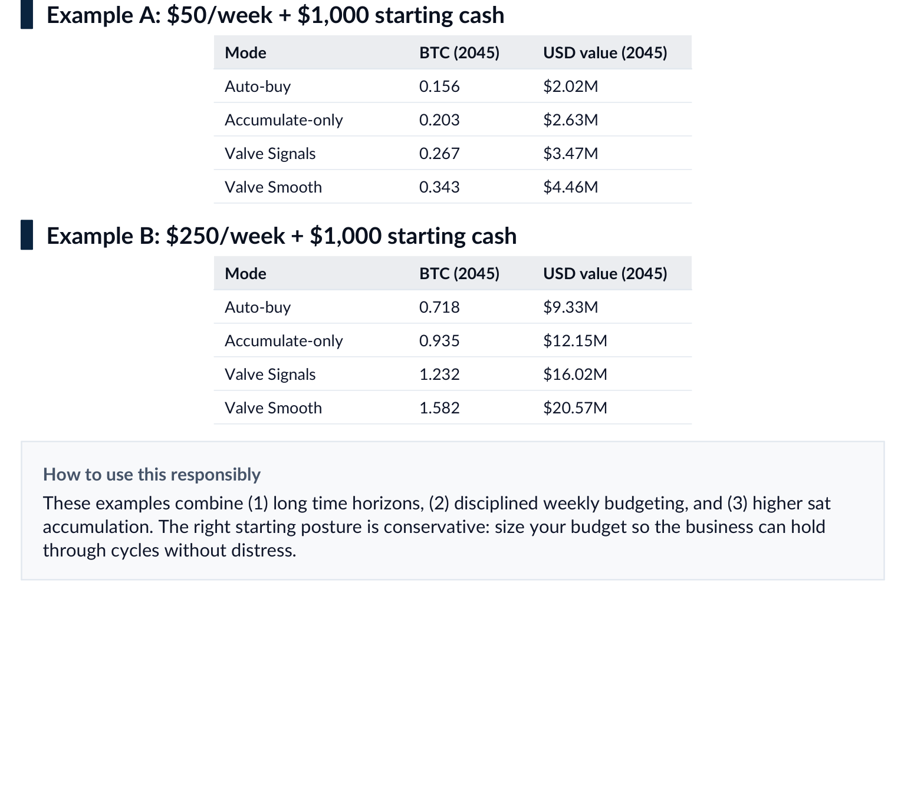
Stress-test weekly budgets and cash buffer targets under conservative assumptions. Use scenarios to ensure the program remains operationally safe through volatility.
AZRO is a treasury operating system. It is designed to be simple to run week-to-week, and strict enough to operate consistently under stress.
Set a target cash buffer (in weeks of operating spend) and a fixed weekly BTC budget. The budget is sized so the business can hold through volatility without impairing operations.
The system accumulates on schedule and can optionally vary execution based on predefined signals while remaining within policy guardrails.
Track BTC balance, BTC-eq, buffer runway, and execution quality in a monthly report. Changes to guardrails require explicit approval.
Each mode is designed to be run consistently with minimal discretion. The right choice depends on your liquidity needs and governance preferences.
A simple, fixed schedule that converts a defined weekly budget into bitcoin. This is the reference point used in the performance comparison.
A disciplined accumulation approach that can lean into weakness while maintaining the cash buffer. No selling—only accumulation inside the defined budget/guardrails.
Adds optional trims within policy limits to protect operational runway. Trims are guardrails—not discretionary trading—and are designed to keep the business liquid.
For businesses that want additional resilience, the system can include optional trims within preset limits. The intent is to protect operating runway—never to chase short-term price moves.
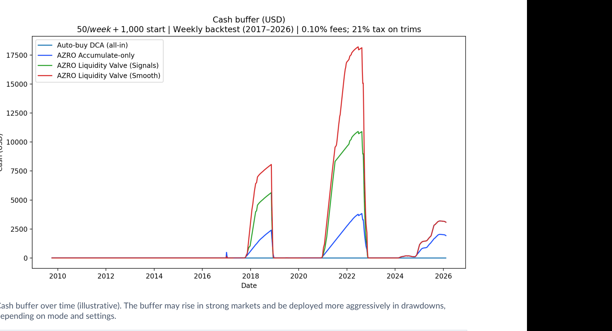
A treasury program succeeds or fails on operational discipline. The goal is clear rules, minimized discretion, and custody practices that match your risk tolerance.
Proposal, one-pager, performance addendum, concerns, and scripts/FAQ.
Accretion/compounding and scenario tools to stress-test budgets and horizons.
Simple weekly execution and a monthly reporting cycle with change control.
These are operationally grounded answers. The right approach depends on your time horizon, budget sizing, and custody posture.
Not an immediate practical threat to Bitcoin’s security today. If credible risk emerges, upgrades would be coordinated deliberately with broad review and consensus.
Large drawdowns are normal for an emerging monetary asset. The program is designed around conservative budget sizing and maintaining operating liquidity. Avoid leverage.
Treat custody as a core control: separation of duties, multisig (or institutional custody), documented procedures, and periodic reviews. Avoid long-term exchange custody.
Bitcoin is digital property backed by verifiable scarcity, decentralization, durable consensus rules, and proof-of-work security. Its “backing” is its enforceable monetary properties.
Compliance is jurisdiction-specific. The program emphasizes clear reporting, recordkeeping, and an operating model that avoids leverage and complex derivative exposure. Consult qualified legal and tax professionals.
Bitcoin is distinct as an issuerless digital commodity with a long track record of decentralization. Many other tokens represent platform or venture risk and are not the same asset class.
For a deeper list of questions and answers, see Bitcoin Concerns.
Everything below is included in the customer packet. Use these as internal references and governance artifacts.
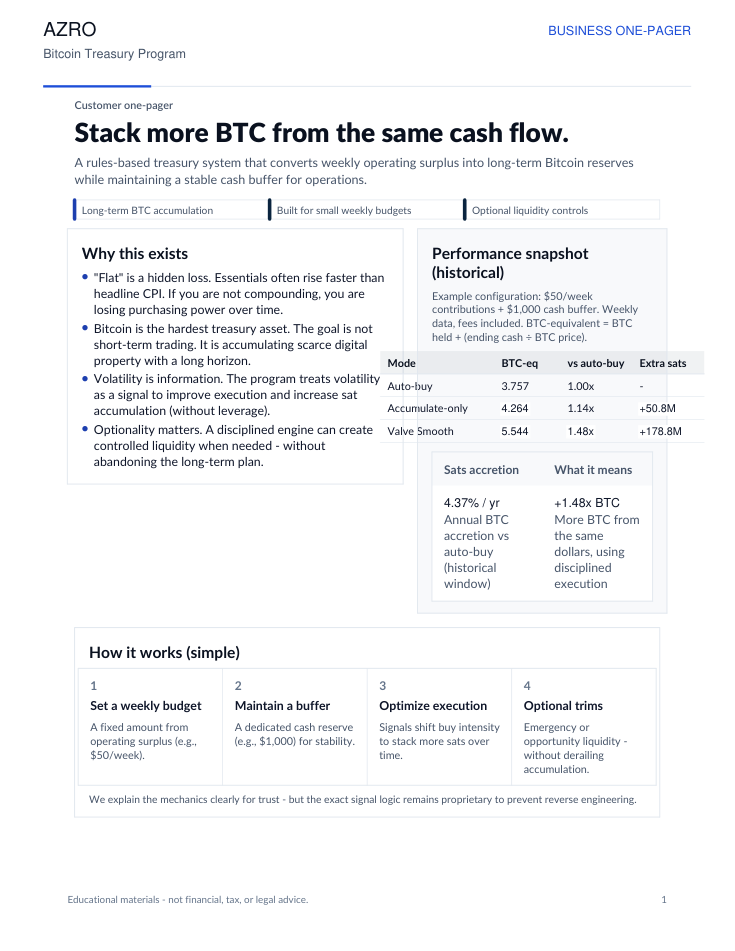
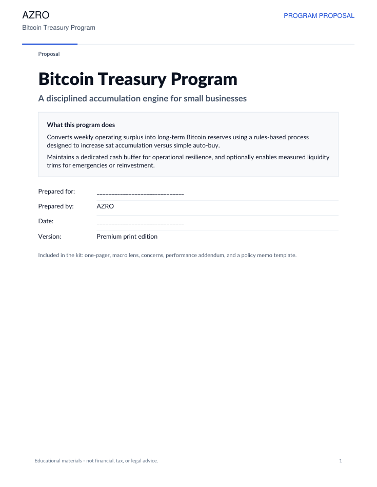
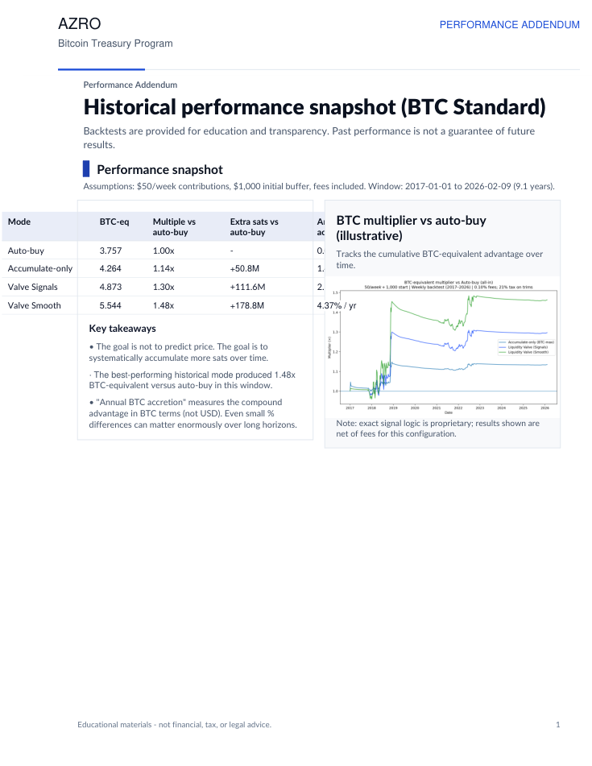
Historical window comparison, charts, and illustrative long-range examples.
Open PDF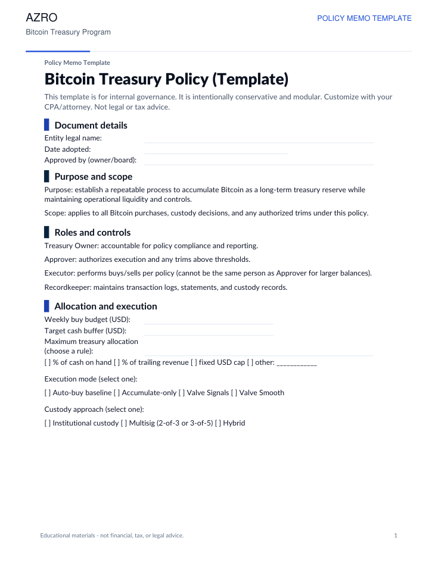
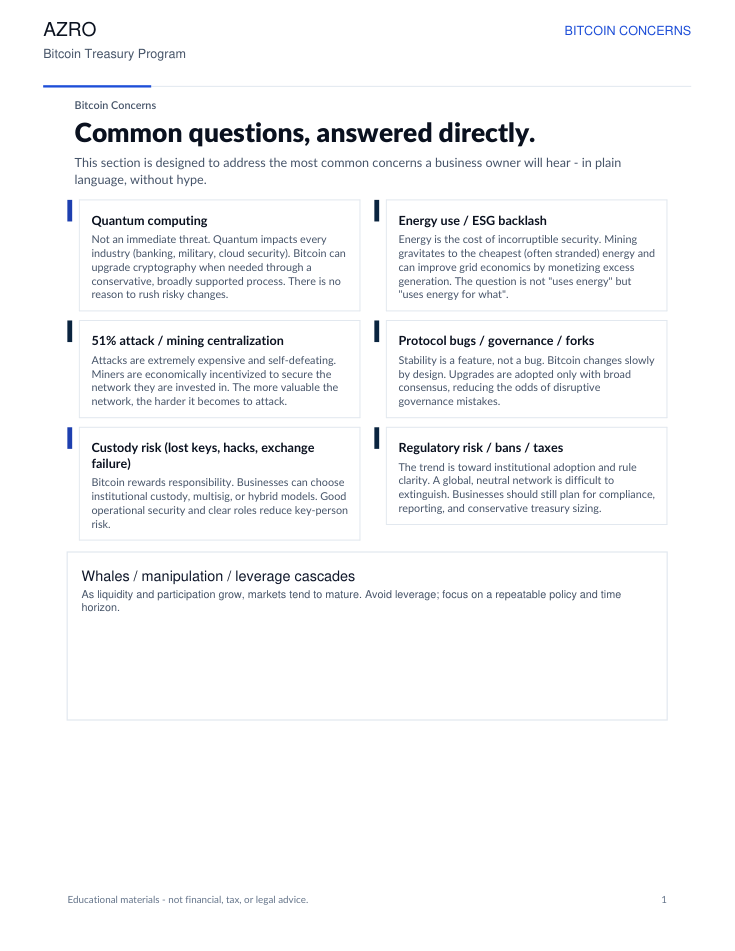
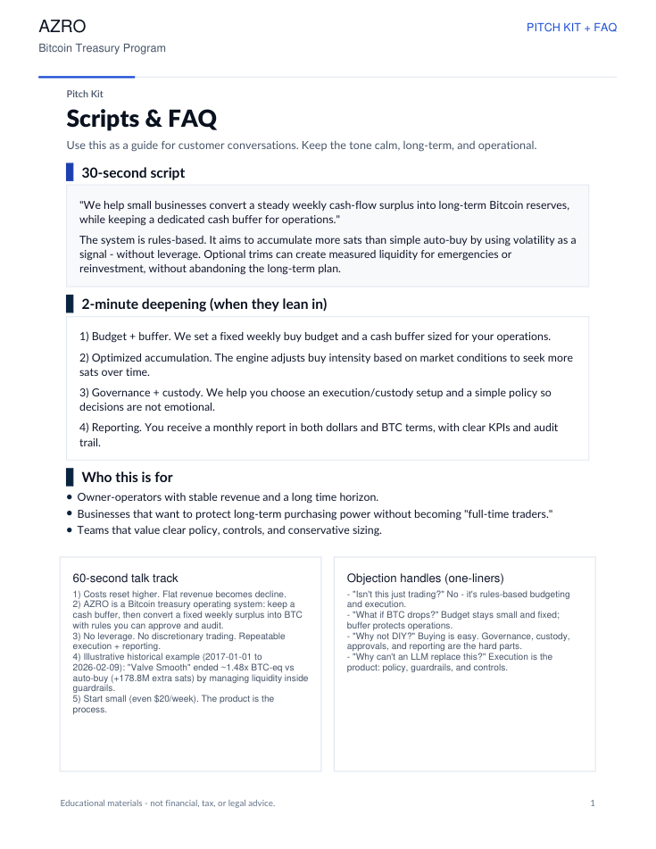
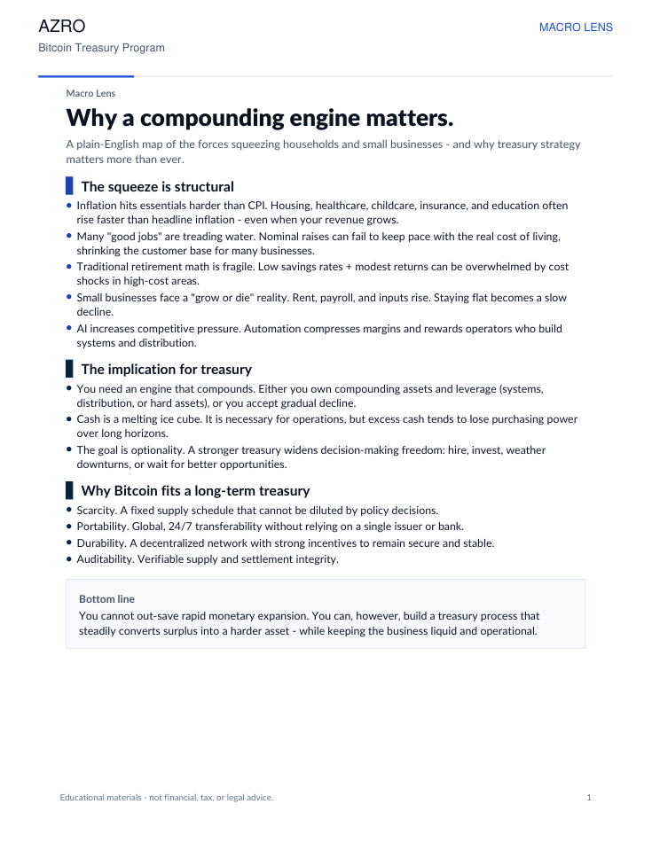
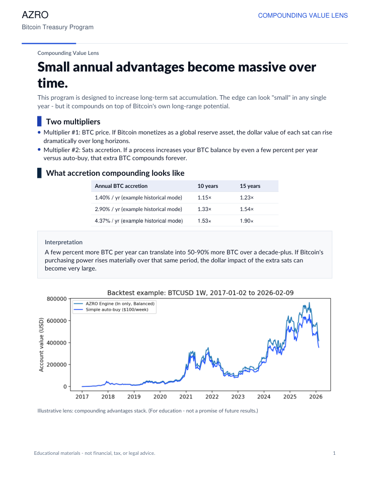
A framework for evaluating long-term store-of-value properties and compounding behavior.
Open PDF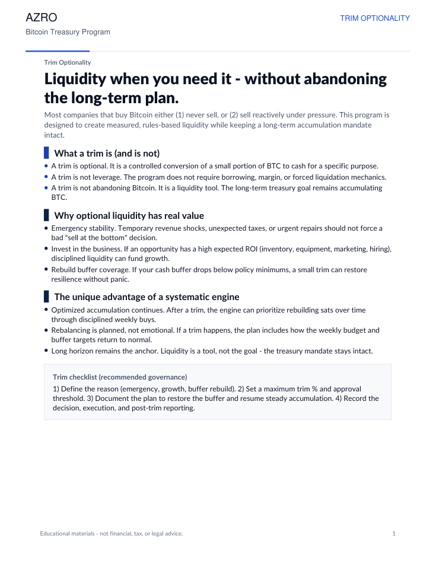
How and why optional trims can be structured as guardrails rather than discretionary trading.
Open PDFIf you share your weekly budget range, cash buffer target, jurisdiction, and custody preference, we can outline an implementation plan and the right guardrails for your business.